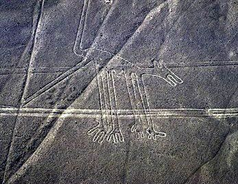

南米：石、砂漠、塩
2011年のペルーとボリビアの旅行写真。目的地を選ぶと、写真、短い物語、動画を見ることができます。
表紙の写真は2011年の旅のものです。ペルーの博物館で頭蓋骨を撮影したのは2014年、カイロで石の頭部を撮影したのは2024年です。「ここから」のページでは、この三つの旅を一つの年表にまとめています。

目的地
ペルーの海岸

ナスカの地上絵小道を歩く人には、どの地上絵が見えたのでしょうか。 ナスカの墓地と水路：チャウチージャ、カワチ、カンタヨックカワチの日干しれんがの中庭は、そこを歩いて通る人々の目にどう映ったのでしょうか。
ナスカの墓地と水路：チャウチージャ、カワチ、カンタヨックカワチの日干しれんがの中庭は、そこを歩いて通る人々の目にどう映ったのでしょうか。 パラカスとワカチナ砂漠が、生命あふれる冷たい海にそのまま落ち込みます。
パラカスとワカチナ砂漠が、生命あふれる冷たい海にそのまま落ち込みます。チチカカ湖
 シルスタニ土台よりも上部のほうが太い墓塔。
シルスタニ土台よりも上部のほうが太い墓塔。 プーノとチチカカ湖ウロス島はトトラ葦で編まれており、絶えず作り直さなければなりません。
プーノとチチカカ湖ウロス島はトトラ葦で編まれており、絶えず作り直さなければなりません。 チュクイト：インカ・ウヨ小さな囲いの中の数十個の石の男根像。どれほど古いのでしょうか。
チュクイト：インカ・ウヨ小さな囲いの中の数十個の石の男根像。どれほど古いのでしょうか。 アラム・ムル（ハユ・マルカ）岩に刻まれた扉。その奥に部屋はありません。
アラム・ムル（ハユ・マルカ）岩に刻まれた扉。その奥に部屋はありません。クスコと聖なる谷
 クスコこの継ぎ目を作ったのは誰で、のちにその周りに何が建てられたのでしょうか。
クスコこの継ぎ目を作ったのは誰で、のちにその周りに何が建てられたのでしょうか。 サクサイワマンクスコの上の斜面を、三重のジグザグの壁が登っていきます。
サクサイワマンクスコの上の斜面を、三重のジグザグの壁が登っていきます。 マチュ・ピチュ1911年にハイラム・ビンガムが到着したとき、ここには地元の農民が暮らしていました。
マチュ・ピチュ1911年にハイラム・ビンガムが到着したとき、ここには地元の農民が暮らしていました。 オリャンタイタンボ石切り場からの道沿いに、ピンク色の石が置き去りにされています。
オリャンタイタンボ石切り場からの道沿いに、ピンク色の石が置き去りにされています。 ピサックと聖なる谷段々畑が巨大な階段のように山腹を下っていきます。
ピサックと聖なる谷段々畑が巨大な階段のように山腹を下っていきます。